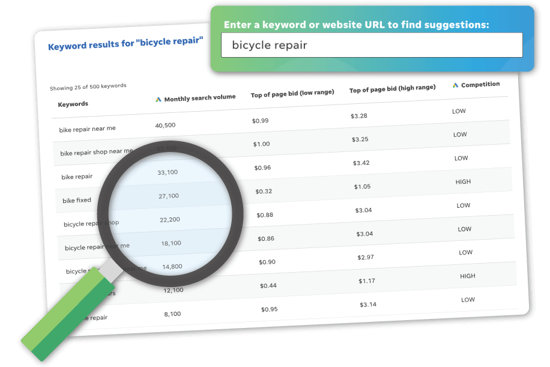
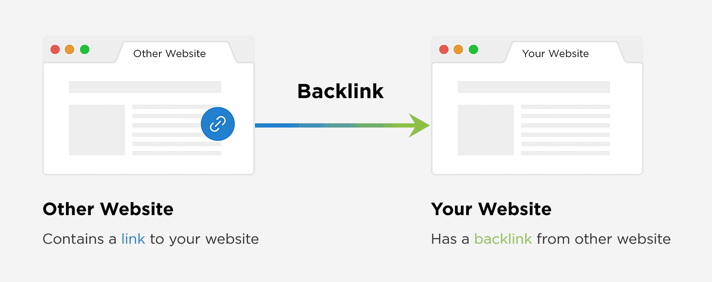

What is SEO? (Search Engine Optimization)
Definition
Search Engine Optimization (SEO) is the collection of methods for improving a website’s visibility in search engine results, such as Google, Bing, or DuckDuckGo. Naturally, this attracts more organic (unpaid) traffic to a given website.
Crawlers and Indexers
Search engines build and maintain indexed data structures containing information about various webpages using programs known as crawlers and indexers.
Strategies for SEO
While crawling is mostly an automated feature of search engines which requires no input on the part of a website’s publisher, there are a number of strategies a publisher can use to ensure the indexing done by the engine is optimal to produce best traffic conditions for a given website.
Keywords
Identifying the words or phrases people use when searching for content related to your site–called keywords–and using these in the page content.

Image source: Wordstream
On-Page SEO
Optimizing the individual elements of a webpage itself.
Provided below is a basic checklist.
| Content quality | Clear, informative, relevant. |
|---|---|
| Title tags and meta descriptions | Present, short, descriptive. |
| Headings and structure | Different headings (H1, H2, H3, ...) used for clarity and hierarchy. |
| URL structure | Clear, descriptive. |

Image source: Backlinko
Off-Page SEO
Improving a website’s authority and reputation through external means, primarily via backlinks—other reputable websites which link into a target website.
Technical SEO
There are a number of technical details a website publisher can polish to ensure that the programs used by search engines for crawling and indexing it are able to do so in as streamlined a manner as possible. These are most important for more advanced website developers.
Provided below is a basic checklist.
| User experience (UX) | Search engines favor websites with features that users typically find easy and enjoyable to navigate. Some primary factors are low bounce rates, fast loading, and mobile friendliness. |
|---|---|
| HTTPS | Prefer secure connections. |
| Sitemaps | Employ a special XML protocol meant for a publisher to inform search engines about URLs on a website that are available for web crawling. |
| Schema markup | Special markup tags may be added to a website’s HTML to help provide search engines better context about the information on the page without changing its content. |